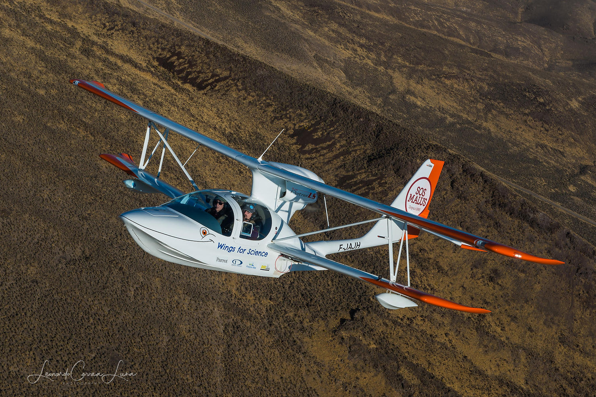

Blog
Carnet de route
Récits de missions, nouvelles du terrain et actualités de l'association
Récits de missions, nouvelles du terrain et actualités de l'association

Suite au nouveau confinement décrété en nov 2020, nous soutenons le manifeste rédigé par les fondateurs de Chilowé, et envoyé au Président de la République, pour un libre accès à l
Lire l'article →
De retour de notre mission canadienne sub-arctique, nous volons vers le sud ouest pour parvenir juste à temps pour l'événement astronomique de l'année : l'éclipse so
Lire l'article →
Woohoo ! Regardez ça ! Deux magazines racontent en détail et en images nos aventures :
Lire l'article →
Quittant Yohan de la Réserve de l'Amana au nord de la Guyane, nous longeons la côte atlantique que nous photographions systématiquement : escortés par des oiseaux, nous découvrons
Lire l'article →
Apres la mission au Bresil, direction la Guyane francaise plus au nord ! A Cayenne nous retrouvons notre amie Dominique rencontree lors de notre premier passage.
Lire l'article →
Il aura fallu 3,5 milliards d'années à la vie telle que nous la connaissons pour évoluer de l'organisme monocellulaire à la biosphère d'aujourd'hui, un incroyable système de près d
Lire l'article →
Notre nouveau partenaire Zeppelin Geo, en association avec notre attache de presse Gregoire de HELIOM, a edite une nouvelle collection de nos meilleures photos aeriennes.
Lire l'article →
Bonne année à toutes et tous ! On espère que votre année 2016 a été un immense succès, et que l'année 2017 s'annonce encore meilleure !
Lire l'article →
Nous revoici au Bresil ! Rentres par Iguacu, nous sommes ici pour participer au travail de conservation et d'etude du milieu naturel du Parana.
Lire l'article →
Nous voici a l'est de l'Argentine ou nous allons participer a une mission paleontologique. Mais avant cela, Clementine s'est offert un cours de tango a Buenos Aires -- on ne refuse
Lire l'article →
Apres notre mission de modelisation du Glacier d'Upsala, nous avons quitte la ville de Calafate et avons longe les Andes en direction du nord, vers le Chili.
Lire l'article →
Depuis la ville touristique d'Ushuaia et surtout depuis la ville de Puerto Williams encore plus au sud, nous remontons vers le Nord le long de la cote atlantique jusqu'a Rio Galleg
Lire l'article →